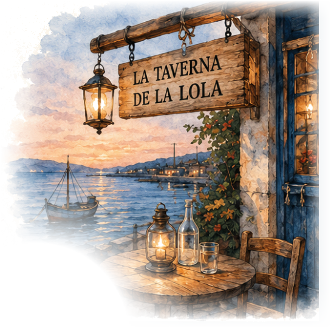
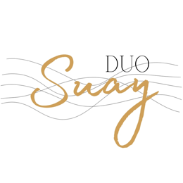
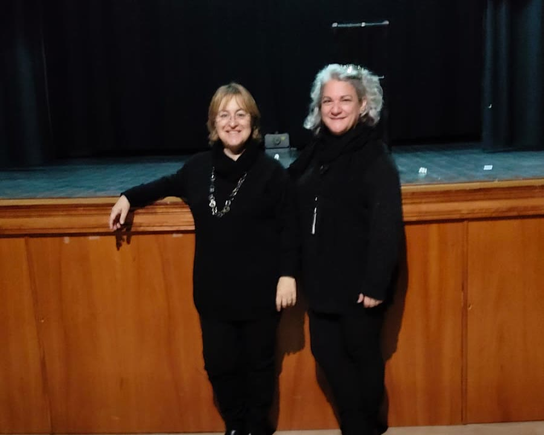
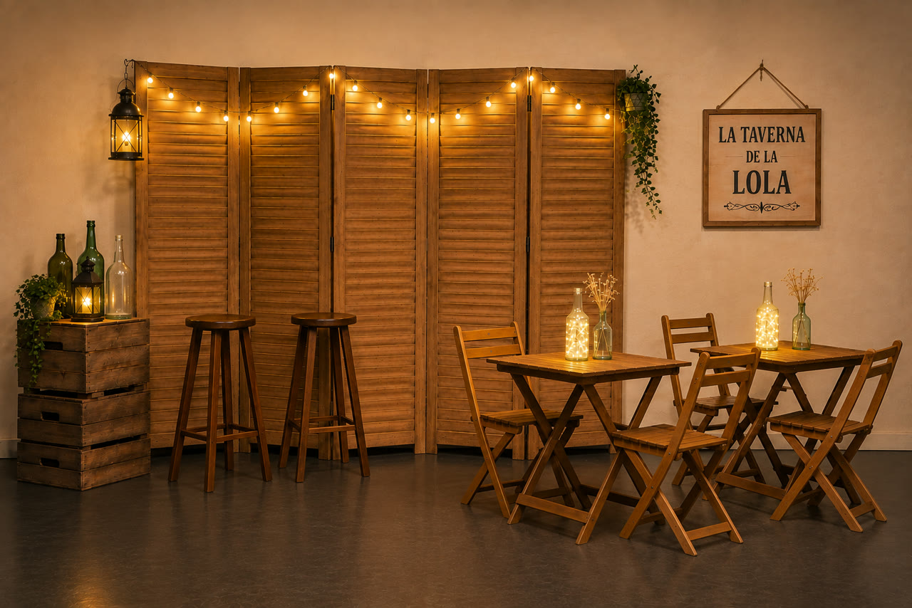
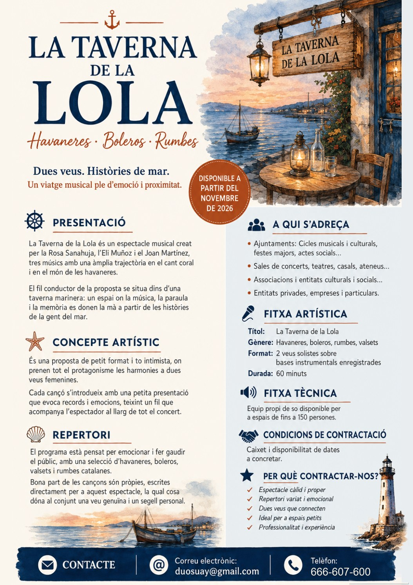

Havaneres · Boleros · Rumbes
Dues veus. Històries de mar.
Un viatge musical ple d'emoció i proximitat.


Presentació
on la música, la paraula i la memòria es donen la mà
El fil conductor de la proposta se situa dins d'una taverna marinera, a partir de les històries de la gent del mar.
És una proposta de petit format i íntima, on prenen tot el protagonisme les harmonies a dues veus femenines. Cada cançó s'introdueix amb una petita presentació que evoca records i emocions, i teixeix un fil que acompanya l'espectador al llarg de tot el concert.
Un programa pensat per emocionar i fer gaudir el públic, amb havaneres, boleros, valsets i rumbes catalanes. Bona part de les cançons són pròpies, escrites expressament per a aquest espectacle, i això dona al conjunt una veu genuïna i un segell personal.


L'escenari
i seieu, que comença la música
L'escenari es converteix en una taverna de port, càlida i acollidora.
Escolteu-lo
cantades per la Rosa i l'Eli
Cançons pròpies de l'espectacle · © Tots els drets reservats
Per als programadors
Equip propi de so disponible per a espais de fins a 150 persones.
Caixet i disponibilitat de dates a concretar.

Contractació
i deixeu que soni el mar
Ajuntaments, entitats i festes majors: expliqueu-nos la data i el lloc, i us enviarem la proposta.